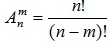
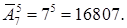

Число размещений без повторений
В комбинаторике размеще́нием (из n по m) называется упорядоченный набор из k различных элементов из некоторого множества различных n элементов.
Пример. Сколькими способами можно распределить между 7 спортсменами три призовых места.
Решение. Пронумеруем спортсменов цифрами от 1 до 7. Рассмотрим все возможные комбинации этих цифр по три x_{1}, x_{2}, x_{3}. Тогда x_{i} будет соответствовать i-тому призовому месту. В каждой такой комбинации будет важен порядок входящих в неё цифр и не все цифры задействованы. Следовательно, имеем размещение 7 элементов по три
A =
Число размещений с повторениями
Размещение с повторениями или выборка с возвращением — это размещение «предметов» в предположении, что каждый «предмет» может участвовать в размещении несколько раз.
Пример. В лифт восьмиэтажного дома вошли 5 пассажиров. Сколькими способами могут выйти пассажиры на каждом этаже, начиная со второго?
Решение. Задача сводится к распределению 5 пассажиров по 7 этажам (т. е. набор упорядоченный), причем возможны повторения (т. е. несколько пассажиров могут выйти на одном этаже). Таким образом, задача сводится к нахождению числа размещений с повторениями:
Ā =